数据探索框架图
通过检验数据集的数据质量、绘制图表、计算某些特征量等手段，对样本数据集的结构和规律进行分析的过程就是数据探索。数据探索有助于选择合适的数据预处理和建模方法，甚至可以完成一些通常由数据挖掘解决的问题。
数据质量分析
数据质量分析是数据挖掘中数据准备过程的重要一环，是数据预处理的前提，也是数据挖掘分析结论有效性和准确性的基础，没有可信的数据，数据挖掘构建的模型将是空中楼阁。
数据质量分析的主要任务是检查原始数据中是否存在脏数据，脏数据一般是指不符合要求，以及不能直接进行相应分析的数据，赃数据包括如下内容：
缺失值的原因：
- 信息暂时无法获取，或者获取信息的代价太大。
- 信息被遗漏，人为的输入遗漏或者数据采集设备的遗漏。
- 属性不存在，在某些情况下，缺失值并不意味着数据有错误，对一些对象来说某些属性值是不存在的，如未婚者的配偶姓名、儿童的固定收入等。
缺失值的影响
- 数据挖掘建模将丢失大量的有用信息。
- 数据挖掘模型所表现出的不确定性更加显著，模型中蕴含的规律更难把握。
- 包含空值的数据会使建模过程陷入混乱，导致不可靠的输出。
缺失值的分析
- 使用简单的统计分析，可以得到含有缺失值的属性的个数，以及每个属性的未缺失数、缺失数与缺失率。
缺失值的处理
- 删除存在的缺失值的记录。
- 对可能值进行插补。
- 不处理情况。
- 构造新特征是否存在缺失值。
异常值
异常值分析是检验数据是否有录入错误以及含有不合常理的数据。忽视异常值的存在是十分危险的，不加剔除地把异常值包括进数据的计算分析过程中，对结果会产生不良影响。
异常值是指样本中的个别值，其数值明显偏离其余的观测值。异常值也称为离群点，异常值分析也称为离群点分析。
简单的计量分析
- 可以先对变量做一个描述性统计，进而查看哪些数据时不合理的。最常用的统计量是最大值和最小值，用来判断这个变量的取值是否超出了合理的范围。如年龄的最大值为150，则该变量的取值为异常值。
3σ原则
如果数据服从正太分布，在3σ原则下，异常值被定义为一组测定值中与平均值的偏差超过3倍标准差的值。在正太太分布的假设下，距离平均值3σ之外的值出现的概率为P（|x-u|>3σ）≤0.003，属于极个别的小概率事件。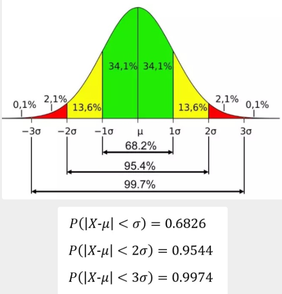
箱线图分析
箱线图是一种直观简洁的方式去呈现一组数据的分布. 因其形状如箱子而得名。箱线图广泛用于各个数据分析领域, 其中包括品质管理。箱形图最大的优点就是不受异常值的影响，能够准确稳定地描绘出数据的离散分布情况，同时也利于数据的清洗。箱线图是由美国著名统计学家John Tukey发明。它能非常简单明了地显示一组数据中5个重要数值：- 最小值(Minimum Value, Min)
- 下四分位数(First Quartile, Q1)
- 中位数(Median Value, Med)
- 上四分位数(Third Quartile, Q3)
- 最大值(Maximum Value, Max)
- 四分位间距(Interquartile Range, IQR)
箱线图为我们提供了识别异常值的一个标准：异常值被定义为小于Q1－5IQR或大于Q3＋1.5IQR的值。
一致性分析
- 数据不一致是指数据进行挖掘，可能会产生与实际相违背的挖掘结果。
- 不一致数据的产生主要发生在数据集成的过程中，这是由于不同的数据源，对于重复存放的数据未能进行一致性更新造成的。
数据特征分析
需要通过绘制图表、计算某些特征量等手段进行数据特征分析。分布分析
分布分析揭示数据的分布特征和分布类型。 - 对于定量数据，了解其分布形式是对称的还是非对称的，发现某些特大或特小的可疑值，可通过绘制频率分布表、频率分布直方图、茎叶图进行直观分析。
- 对于定性分类，可用饼图和条形图。
定量数据的分布分析遵循的主要原则：
- 各组之间必须是相互排斥的。
- 各组必须将所有的数据包含在内。
- 各组的组宽最好相等。
对比分析
对比分析法也称比较分析法，是把客观事物加以比较，以达到认识事物的本质和规律并做出正确的评价。
对比分析法通常是把两个相互联系的指标数据进行比较，从数量上展示和说明研究对象规模的大小，水平的高低，速度的快慢，以及各种关系是否协调。在对比分析中，选择合适的对比标准是十分关键的步骤，选择的合适，才能做出客观的评价，选择不合适，评价可能得出错误的结论。 - 绝对数比较
- 它是利用绝对数进行对比，从而寻找差异的一种方法。
相对数比较
它是由两个有联系的指标对比计算的，用以反映客观现象之间数量联系程度的综合指标，其数值表现为相对数。由于研究目的和对比基础不同，相对数可以分为以下几种：结构相对数（部分与总体关系）：将同一总体内的部分数值与全部数值对比求得比重，用以说明事物的性质、结构或质量。如,居民食品支出额占消费支出总额比重、产品合格率等。
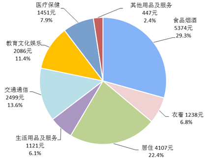
比例相对数（部分与部分关系）：将同一总体内不同部分的数值对*，表明总体内各部分的比例关系，如,人口性别比例、投资与消费比例等。
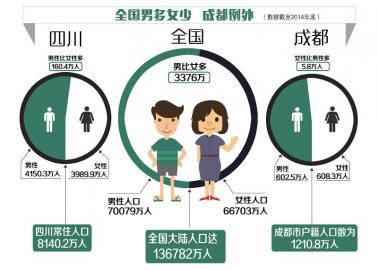
比较相对数（横向对比关系）：将同一时期两个性质相同的指标数值对比，说明同类现象在不同空间条件下的数量对比关系。如,不同地区商品价格对比，不同行业、不同企业间某项指标对比等。
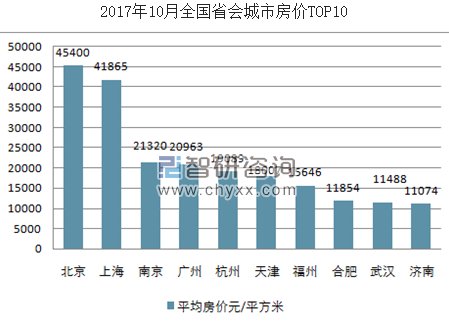
动态相对数（纵向对比关系）：将同一现象在不同时期的指标数值对比，用以说明发展方向和变化的速度。如,发展速度、增长速度等。
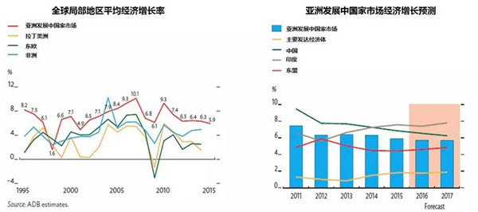
强度相对数（关联指标间关系）：将两个性质不同但有一定联系的总量指标对比，用以说明现象的强度、密度和普遍程度。如,人均国内生产总值用”元/人”表示，人口密度用”人/平方公里”表示，也有用百分数或千分数表示的，如,人口出生率用‰表示。
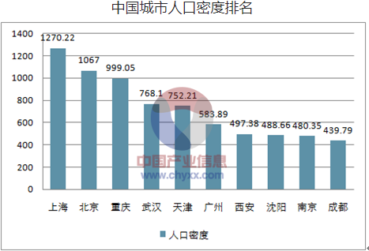
计划完成程度相对数（实际与计划关系）：是某一时期实际完成数与计划数对比，用以说明计划完成程度。
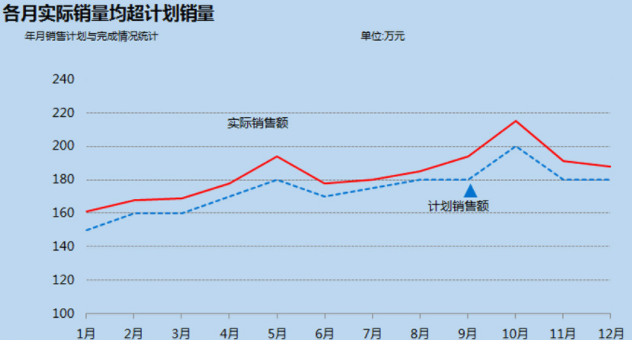
统计量分析
用统计指标对定量数据进行统计描述，常从集中趋势和离中趋势两个方面进行分析。
- 平均水平的指标是对个体集中趋势的度量，使用最广泛的是均值和中位数。
- 反应变异程度的指标是对个体离开平均水平的度量，使用较广泛的是标准差（方差）、四分位间距。
集中趋势度量
- 算数平均数
观测值的总和除以观测值的个数，即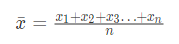
常简称为平均数，也往往是背后机率分布的期望值之不偏估计。
中位数
将所有观测值按大小排序后在顺序上居中的数值。实数数列x=(x1,x2,…,xn)的中位数: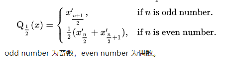
众数
出现最多次的观测值,用众数代表一组数据，适合于数据量较多时使用，且众数不受极端数据的影响.几何平均数
观测值的乘积之观测值个数方根，即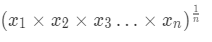
调和平均数
观测值个数除以观测值倒数的总和，即
加权平均数
考虑不同群资料贡献程度不同时的算数平均数截尾平均数（truncated mean）
忽略特定比例或特定数值之外的极端值后所得的平均数。例如，四分平均数（interquartile mean）正是忽略25%前及75%后的资料后所得的算数平均数。全距中点（midrange）
最大值与最小值的算数平均数，即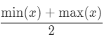
中枢纽（midhinge）
第一四分位数与第三四分位数的算数平均数，即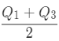
三均值（trimean）
考虑三个四分位数的加权平均数，即
极端值调整平均数（winsorized mean）
以最接近的观测值取代特定比例的极端值后取得的算数平均数。举例来说，考虑10个观测值（由小到大排列为 由小到大列为x1至x10的情况下，10%的极端值调整平均数为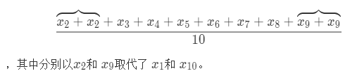
以上的统计量在多维变数中仍可单独地被套用在各个维度上进行，但并不能保证在转轴后仍维持一致的结果。
离中趋势度量
极差
极差=最大值-最小值极差为离散程度的最简单测度值，易受极端值影响。标准差
标准差（又称标准偏差、均方差，英语：Standard Deviation，缩写SD），数学符号σ（sigma）），在概率统计中最常使用作为测量一组数值的离散程度之用。标准差定义：为方差开算术平方根，反映组内个体间的离散程度。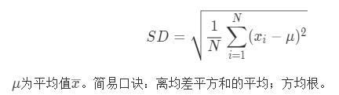
变异系数
在概率论和统计学中，变异系数，又称“离散系数”（英文：coefficient of variation），是概率分布离散程度的一个归一化量度，其定义为标准差与平均值之比: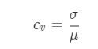
特点：
当需要比较两组数据离散程度大小的时候，如果两组数据的测量尺度相差太大，或者数据量纲的不同,直接使用标准差来进行比较不合适，此时就应当消除测量尺度和量纲的影响，而变异系数可以做到这一点，它是原始数据标准差与原始数据平均数的比。CV没有量纲，这样就可以进行客观比较了。
- 四分位间距
四分位距（interquartile range, IQR）。是描述统计学中的一种方法，以确定第三四分位数和第一四分位数的分别（即Q_{1}, Q_{3}的差距）。与变异数、标准差一样，表示统计资料中各变量分散情形，但四分差更多为一种稳健统计（robust statistic）。
四分位差（Quartile Deviation, QD），是 Q_{1}, Q_{3}}的差距，即QD=(Q_{3}-Q_{1})。
周期性分析
周期性分析是探索某个变量是否随着时间变化而呈现出某种周期变换趋势。时间尺度相对较长的周期性趋势有年度周期性趋势、季节性周期趋势，相对较短的有月度周期性趋势、周度周期性趋势，甚至更短的天、消失周期性趋势。
贡献度分析
贡献度分析又称帕累托分析，它的原理是帕累托法则，又称20/80定律。同样的投入放在不同的地方会产生不同的效益。
相关性分析
分析连续变量之间线性相关程度的强弱，并用适当的统计指标表示出来的过程称为相关性分析。
散点图绘制
判断两个变量是否具有线性相关关系的最直观的方法是直接绘制散点图
绘制散点矩阵图
需要同时考虑多个变量间的相关关系时，一一绘制它们间的简单散点图是十分麻烦的。此时利用散点矩阵同时绘制各变量间的散点图，从而快速发现多个变量间的主要相关性，在进行多元线性回归时显得尤为重要。

计算相关系数
为了更加准确地描述变量之间的线性相关程度，可以通过计算相关系数来进行相关分析。在二元变量的相关性分析过程中比较常用的有Pearson相关系数、Spearman秩相关系数和判读系数。
- Pearson相关系数
在统计学中，皮尔逊积矩相关系数（英语：Pearson product-moment correlation coefficient，又称作 PPMCC或PCCs, 文章中常用r或Pearson’s r表示）用于度量两个变量X和Y之间的相关（线性相关），其值介于-1与1之间。两个变量之间的皮尔逊相关系数定义为两个变量之间的协方差和标准差的商：
上式定义了总体相关系数，常用希腊小写字母ρ作为代表符号。估算样本的协方差和标准差，可得到样本相关系数(样本皮尔逊系数)，常用英文小写字母 r代表：
相关性强度：
- Spearnman秩相关系数
斯皮尔曼相关系数被定义成 等级变量之间的皮尔逊相关系数。 对于样本容量为 n的样本，n个 =原始数据Xi，Yi” style=”border:none;”>被转换成等级数据xi,yi, 相关系数ρ为
原始数据依据其在总体数据中平均的降序位置，被分配了一个相应的等级。 如下表所示：
实际应用中， 变量间的连结是无关紧要的， 于是可以通过简单的步骤计算 ρ.[1][2] 被观测的两个变量的等级的差值 di=xi-yi， 则 ρ 为
- 判定系数
决定系数（英语：coefficient of determination，记为R2或r2）在统计学中用于度量因变量的变异中可由自变量解释部分所占的比例，以此来判断统计模型的解释力。
判定系数是相关系数的评分，用r2表示；判定系数取值范围：0≤r2≤1。r2越接近1，表明x与y之间的相关性越强；r2越接近于0，表明两个变量之间几乎没有直线相关关系。
对于简单线性回归而言，决定系数为样本相关系数的平方。当加入其他回归自变量后，决定系数相应地变为多重相关系数的平方。